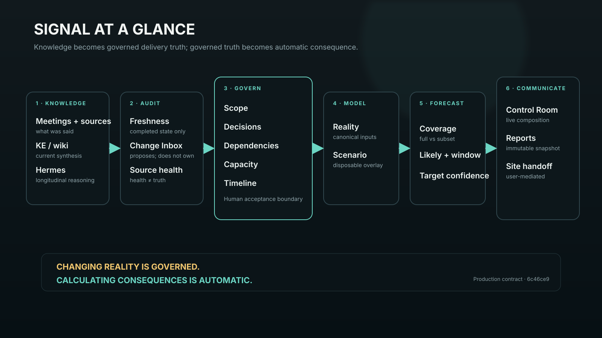

Learn the system
What Signal is, how truth moves, and the daily/weekly operating rhythm.
Open the master guide →A human guide to turning fragmented project knowledge into governed delivery truth—and letting consequences update automatically.
Production authority 6c46ce931–35 minute full trainingFive-session curriculumSignal is not a set of unrelated pages. Each instrument answers a different question in one governed loop.

What Signal is, how truth moves, and the daily/weekly operating rhythm.
Open the master guide →Route from your real-world question to the right owner instrument.
Choose an instrument →Know which controls explore, which write Reality, and what recomputes.
See action boundaries →The current operating picture: outcome, choices, constraints, freshness.
Guide · 60-second referenceReconstruct dormant knowledge and establish first governed Reality.
Guide · ReferenceDiscover what changed outside Signal that Reality has not accounted for.
Guide · ReferenceGovern product shape and its relationship to execution work.
Guide · ReferenceMake unresolved organizational tension visible and operable.
Guide · ReferenceDeclare what must happen before what; do not confuse relation with dependency.
Guide · ReferenceModel who is actually available and test allocation scenarios.
Guide · ReferenceSee modeled consequences: likely outcome, window, coverage, and target tension.
Guide · ReferenceRead forward-facing time across planned, projected, committed, and occurred events.
Guide · ReferenceMix and freeze the right evidence-backed story for an audience.
Guide · ReferenceFind an idea, inspect the object, and follow its provenance.
Guide · ReferenceFollow one realistic change from meeting evidence to leadership brief.
End-to-end workflow →A complete spoken narrative with screen, cursor, callout, transition, and fallback direction.
Open script →An 8–12 minute professional demonstration—not a compressed manual.
Open script →Deterministic fixtures, expected numbers, reset checks, and no-production-write rules.
Open demo state →Meaning, concern level, next action, and what not to assume.
Open catalog →Recover context, distinguish data from product failure, and find the owner.
Open troubleshooting →Authority pinning, screenshot recapture, drift checks, and bug retirement.
Open maintenance guide →